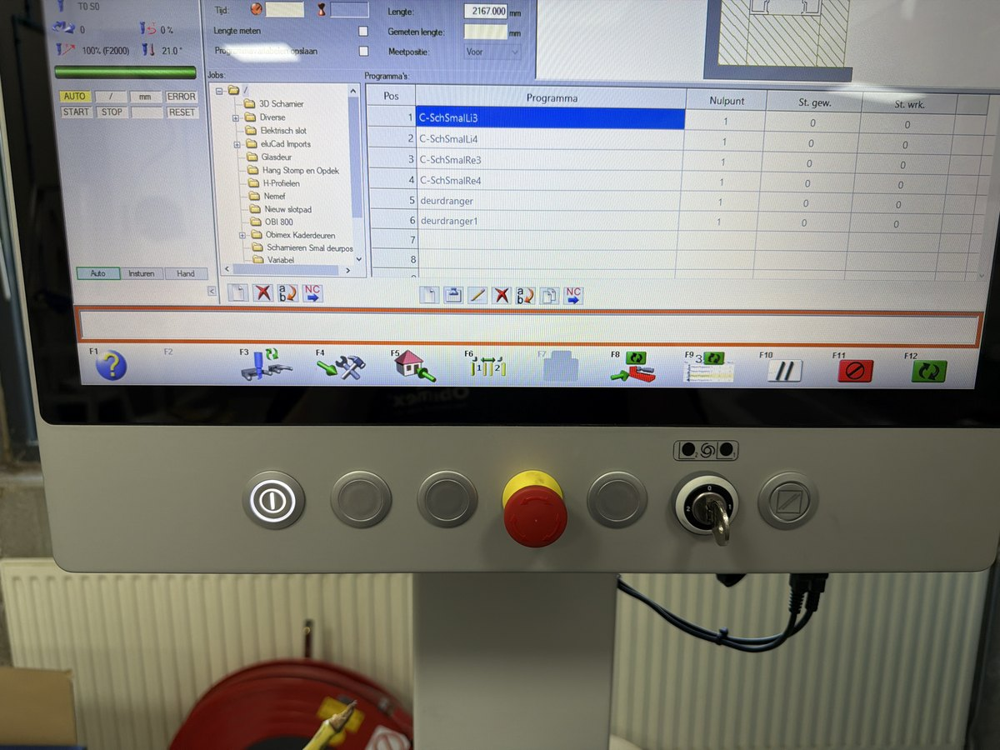
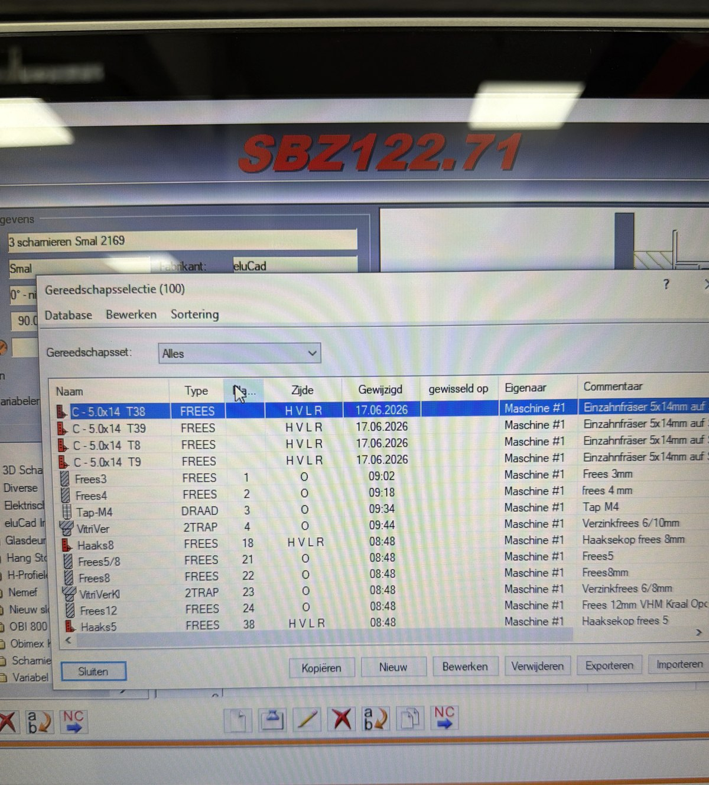
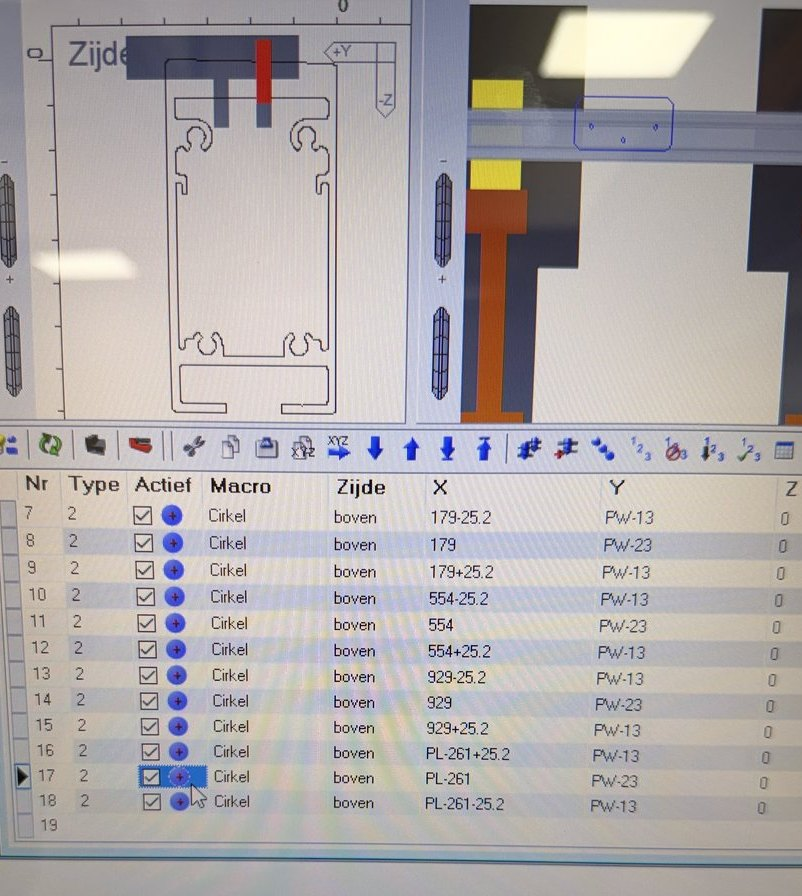
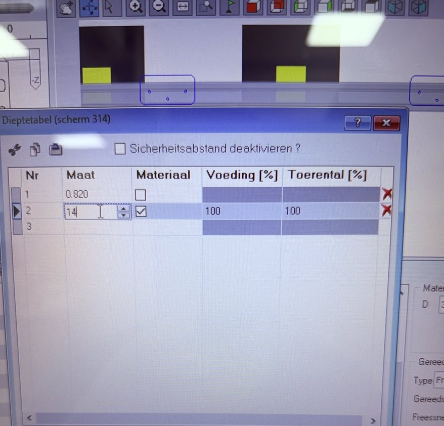
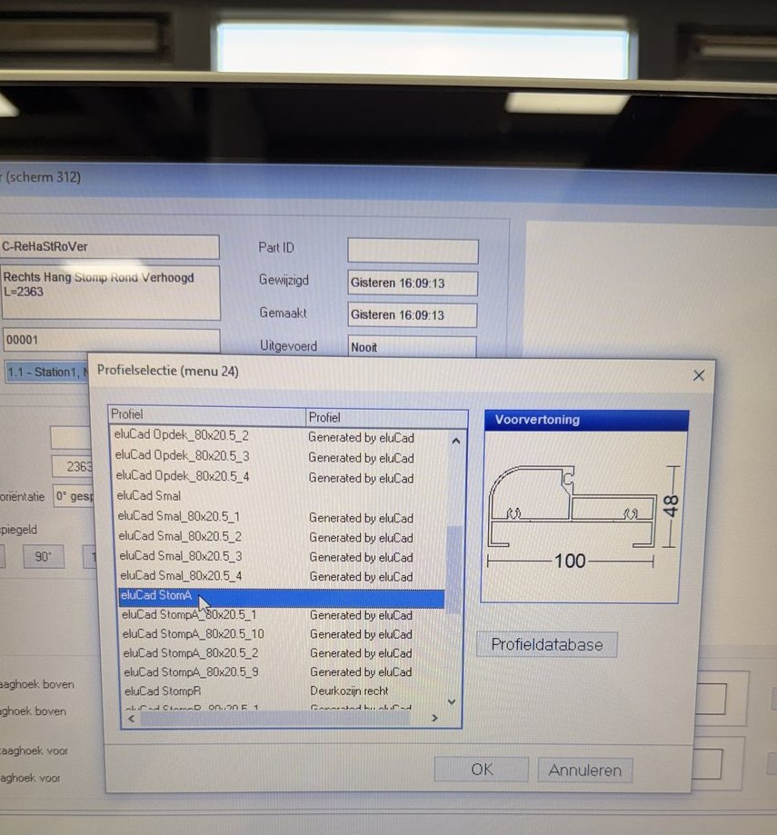
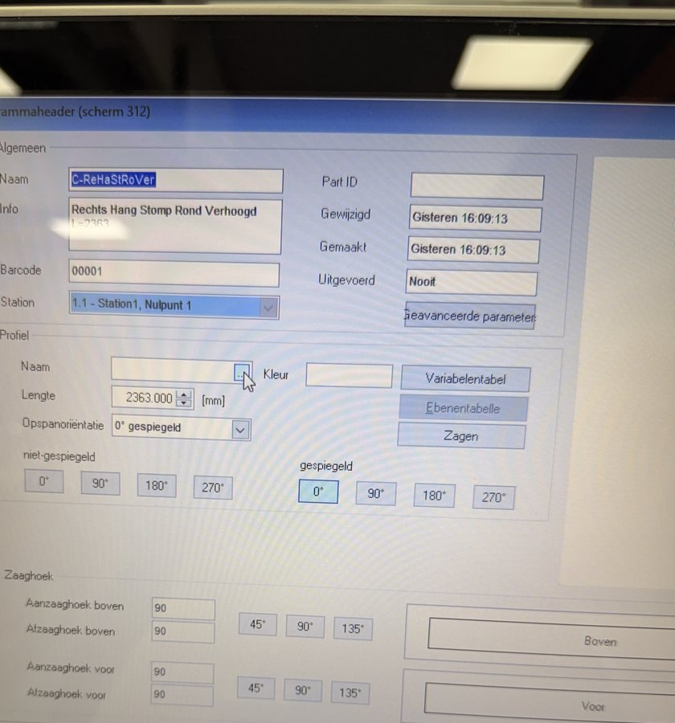
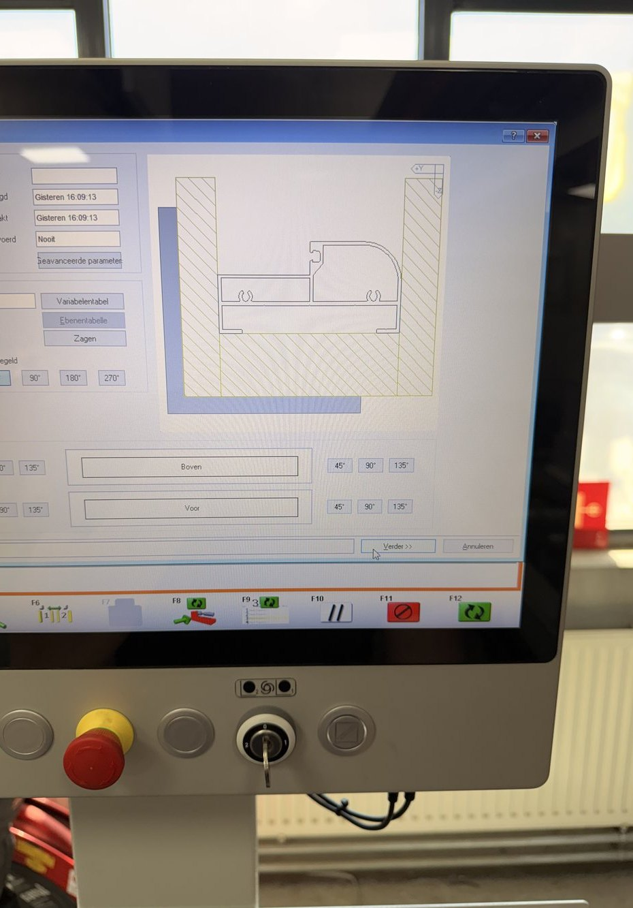

De machine
De SBZ 122/71 is een CNC-profielbewerkingscentrum voor het kosten-efficiënt bewerken van aluminium, PVC en dunwandige stalen profielen. De machine wordt aangestuurd met de grafische eci2-bedieningsinterface en de eluCad-programmeersoftware: programmeren gebeurt via een logisch opgebouwde grafische interface, zonder dat je rechtstreeks ISO-code hoeft te schrijven.
| Slag X-as | 4.295 mm · vmax. 120 m/min |
| Slag Y-as | 910 mm · vmax. 60 m/min |
| Slag Z-as | 475 mm · vmax. 50 m/min |
| Max. bewerkingslengte | 4.150 mm (4.000 mm met kopbewerking) |
| Afmetingen (L×D×H) | 6.592 × 2.171 × 3.000 mm |
| Gewicht | ± 2.900 kg |
| Besturing / software | eci2-interface · eluCad-programmering |
Specificaties volgens de fabrikant; controleer altijd het typeplaatje en de handleiding van jóuw machine voor de exacte uitvoering.
Het besturingssysteem — live
Hieronder speelt de complete opstartsequentie zich automatisch af: van stroom aan tot bedrijfsklaar.

Interactieve versie (werkt in een browser met JavaScript). Klik op Opnieuw afspelen om te herhalen.
| Pos | Programma | Nulpunt | St. |
|---|---|---|---|
| 1 | C-SchSmaLL3 | 1 | 0 |
| 2 | C-SchSmaLL4 | 1 | 0 |
| 3 | C-SchSmaRe5 | 1 | 0 |
| 4 | deurdranger | 1 | 0 |
| 5 | deurdranger1 | 1 | 0 |
Machine opstarten
Vijf stappen in volgorde. Daarna controleert de eci2-besturing zelf vier basispunten — dezelfde sequentie die je hierboven in de simulatie ziet.
- Stroom aan met de grote schakelaar aan de zijkant.
- Scherm gaat aan en logt automatisch in.
- Druk de stuurspanning aan — blauwe knop links onderin.
- Wacht tot de 4 controles klaar zijn → machine is bedrijfsklaar.
Zet de stroom aan
Schakel de stroom in met de grote schakelaar aan de zijkant van de machine.
Wacht tot het scherm aangaat AUTOMATISCH
Het scherm start op en logt automatisch in. Je wordt doorgeleid naar de eluCad-besturing (het besturingssysteem).
Druk de stuurspanning aan
Druk op de blauwe knop links onderin het bedieningspaneel om de stuurspanning in te schakelen.

Machinestatus verschijnt AUTOMATISCH
Er verschijnt een machinestatus-scherm met meerdere checkpoints. Vier basispunten worden vanzelf nagekeken — de besturing loopt ze geleidelijk door:
Bedrijfsklaar
Zodra alle checkpoints zijn doorlopen, is de machine gereed voor gebruik.
Wacht altijd tot de vier controles volledig zijn afgerond voordat je verdergaat.
Spindel / frees vervangen
Twee routes: een bestaand gereedschap kiezen, of een nieuw standaardgereedschap inlezen. Daarna meet je de lengte en laat je de machine de frees zelf op de juiste magazijnplek zetten.
- Ga naar F3 · Tool Management en kies het juiste magazijn.
- Kies een bestaand gereedschap, of lees een nieuw in via Bewerkingen → Gereedschappen → Nieuw (let op de juiste bestelcode).
- Meet de lengte en zet de geometrie (bij kleine frezen: +1 mm voor de spantang).
- F3 → Gereedschapwisselaar: spindelhouder kiezen → opvullen → freeskop inzetten → Start.
Open Tool Management F3
Voor handmatig vervangen ga je naar F3 — het gereedschapsbeheer (Tool Management).
Kies het juiste magazijn
Er zijn vijf magazijnen, weergegeven met nummers. Diezelfde nummers zie je ook terug in de machine zelf.
HANDMATIG betekent: een gereedschap opnieuw inlezen dat er nog niet bestond. Kies je een magazijn, dan kun je daar een bestaand gereedschap in zetten.
Bestaand gereedschap kiezen
Er staat een hele rij frezen die al ingewerkt zijn, met vaste afmetingen en al gestabiliseerd. Daar kun je direct uit kiezen.

Of: een nieuw standaardgereedschap inlezen
Wil je een gereedschap dat er nog niet is? Ga linksboven naar Bewerkingen → Gereedschappen en klik op Nieuw.
Daar staat een selectie van 124 standaardgereedschappen voor allerlei doeleinden en afmetingen. Selecteer er één en zet hem in het magazijn.
Gebruik de juiste bestelcodes
Let op: koppel altijd de juiste code aan de juiste aangekochte tool. Verkeerde codes geven problemen.
Standaard houders — bestelnummers:
| Bestelnummer | Specificatie |
|---|---|
| 136 35 08 17 | Dia 63 mm / lengte 67 |
| 136 35 08 13 | Standaard houder (type 13) |
| 136 35 08 18 | Standaard houder (type 18) |
Bepaal het houdertype
Dubbelklik in hetzelfde bewerkingsmenu op een gereedschap dat al ingelezen is. Daar zie je de houder.
De laatste twee cijfers van het houdernummer geven het type aan: 18 standaard, 13 standaard, 00 standaard. Pak de bijbehorende houder erbij.
Meet de geometrie (totale lengte)
Kijk bij geometry naar de totale lengte en meet die met een accurate metalen maatstaf. Zet de frees vast in de houder op de werkbank.
De geometrie is het belangrijkste — die kun je later altijd nog aanpassen. Zet hem eerst zo dicht mogelijk in de buurt.
Reken +1 mm voor de spantang
Is de spantang nog niet vastgedraaid? Reken dan op 1 mm méér dan de huidige geometrie-lengte.
Bij kleine frezen wordt de frees namelijk nog ±1 mm dieper in de spantang getrokken zodra je die met de moersleutel aantrekt.
Laat de machine de frees plaatsen
Pas eerst de geometrie aan naar de actuele lengte. Ga dan in F3 naar "Gereedschapwisselaar tonen" en volg:
① Links onder: Gereedschap opnemen. ② Pijltje links daarvan: gereedschap opvullen. ③ Rechter knop met pijltje: kies welke spindelhouder je gevuld wilt hebben (bv. 123).
④ Druk op "gereedschap plaats opvullen". ⑤ Druk de freeskop handmatig in de machine. ⑥ Druk op Start.
De machine verwerkt de frees nu zelf naar de magazijnplek die je hebt gekozen.
Diepteverschil maken in een programma
Wil je de freesdiepte van een bewerking veranderen? Dat doe je per macro (een cirkel of rechthoek) via de Dieptetabel. Daarin pas je de Maat aan — dat is de diepte.
- Open het programma → je komt in het teken- en bewerkingssysteem.
- Klik op Profiel → kies de zijde → klik de macro aan (cirkel of rechthoek).
- Klik rechtsonder op Dieptetabel.
- Pas de Maat (diepte) aan bij Nr 2 en bevestig met OK.

Open het programma
Klik op het programma en open de programmagegevens. Je komt nu in het teken- en bewerkingssysteem (de profiel-/macroweergave).
Kies het profiel
Klik bovenin op Profiel om het profiel te selecteren waarop je werkt.
Kies de zijde (facing)
Klik aan welke zijde / facing je wilt veranderen — bijvoorbeeld boven. In de macrolijst zie je per regel de kolommen Type, Macro en Zijde.

Selecteer de macro
Klik op de macro die je wilt aanpassen. Dit kan een cirkel of een rechthoek zijn — afhankelijk van de vorm van de bewerking.
Open de Dieptetabel
Zodra de macro is aangeklikt, verschijnt rechtsonder in het scherm de knop Dieptetabel. Klik die aan.
Verander de maat (diepte)
In de Dieptetabel (scherm 314) pas je de Maat aan — dat is de diepte. Op dit moment staat de bewerking op maat twee (Nr 2). Vul de gewenste waarde in en bevestig met OK.
Per regel kun je naast de maat ook de Voeding [%] en het Toerental [%] instellen. Laat Materiaal aangevinkt staan zoals bij de bestaande regels.

Een profiel invoeren
Heeft een bewerking nog geen profiel? Dan kies je er eerst één uit de eluCad-catalogus. Daarna controleer je de instellingen en laat je de machine de bewerkingen op het profiel zetten.
- Geen profiel? Klik op Verder → de Profielselectie opent.
- Selecteer het profiel uit de lijst (met voorvertoning van de doorsnede) en bevestig.
- Controleer in de Programmaheader (scherm 312) of alle instellingen kloppen.
- Klik op Verder → de bewerkingen worden op het profiel gezet.
Open de profielselectie
Is er bij een bewerking geen profiel meer ingesteld, dan klik je op Verder. Er opent dan automatisch een Profielselectie (menu 24).
Kies het juiste profiel
Klik het profiel aan in de lijst. Rechts zie je een voorvertoning van de doorsnede met de afmetingen. Bevestig met OK.

De profielen staan in eluCad als standaard profielencatalogus; daar kun je profielen tekenen en aanpassen. Het kan ook in het Machine Control Center (eluCam) bewerkt worden, maar minder gemakkelijk dan in eluCad.
Controleer de instellingen
In de Programmaheader (scherm 312) controleer je of alle variaties goed staan: naam/info, lengte, opspanoriëntatie en spiegeling, de zaaghoeken (aan-/afzaaghoek boven en voor) en de zijde.

Verder: bewerkingen op het profiel
Staan alle variaties goed? Klik op Verder. Het profiel wordt geladen (je ziet de doorsnede in beeld) en de machine zet de bewerkingen op het profiel.

Voorbeeld: "Hang stomp afgerond" is een Obi 100-profiel (eigen product) met een afronding. Het wordt niet veel meer gebruikt, maar er zijn bewerkingen van — bijvoorbeeld een glazen kaderdeur of een houten hangdeur.